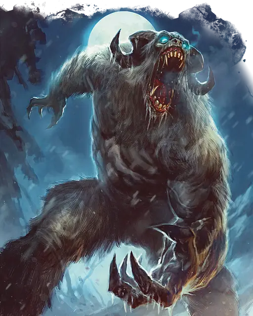

Йети
Yeti
Большое Чудовище, Хаотичное Злое

Класс Защиты 12 Инициатива +1 (11)
Хиты 51 (6к10 + 18)
Скорость 40 футов, Лазания 40 футов
| мод | спас | ||
|---|---|---|---|
| СИЛ | 18 | +4 | +4 |
| ЛОВ | 13 | +1 | +1 |
| ТЕЛ | 16 | +3 | +3 |
| мод | спас | ||
|---|---|---|---|
| ИНТ | 8 | −1 | −1 |
| МДР | 12 | +1 | +1 |
| ХАР | 7 | −2 | −2 |
Иммунитеты Холод
Чувства Тёмное зрение 60 футов, пассивное Восприятие 15
Языки Язык Йети
Опасность 3 (700 опыта; БВ +2)
Особенности
Страх огня. Если йети получает урон Огнём, он совершает с Помехой броски атаки и проверки характеристик до конца своего следующего хода.
Действия
Мультиатака. Йети может использовать Леденящий взгляд и совершает две атаки Когтями или Броском льда в любой комбинации.
Когти. Бросок рукопашной атаки: +6, досягаемость 5 фт. Попадание: 7 (1к6 + 4) Рубящего урона плюс 3 (1к6) урона Холодом.
Бросок льда. Бросок дальнобойной атаки: +6, дистанция 30/120 фт. Попадание: 6 (1к4 + 4) Дробящего урона плюс 2 (1к4) урона Холодом.
Леденящий взгляд. Спасбросок Телосложения: Сл 13, одно видимое йети существо в 30 футах. Провал: 5 (2к4) урона Холодом, и цель Парализована до начала следующего хода йети, если только не обладает Иммунитетом к урону Холодом. Успех: Цель невосприимчива к Леденящему взгляду всех йети (кроме Отвратительных йети) на 1 час.
Бонус мастерства +2
Среда обитания Подземье, Стихийный план Земли
Сокровища Любые
Йети
Пугающие хищники из замёрзших пустошей
Среди заснеженных вершин и замёрзших земель йети без устали преследуют тех, кто осмелился забрести на их территорию. Неуловимые и безжалостные, они напоминают гигантских приматов с бледным мехом и изогнутыми, как у баранов, рогами. Йети сливаются со снегом и ледяными утёсами и выдают себя лишь жутким воем перед ударом ледяными когтями. В дополнение к физической силе эти чудовища могут призвать лёд и обрушить его на врагов или одним взглядом заставить своих жертв застыть на месте.
Йети настолько неуловимы, что баек про них гораздо больше, чем историй о реальных встречах. Если вдалеке раздаётся вой, мало кто сможет сказать наверняка — чудовища это или ветер. Тем не менее во многих горных поселениях и днём, и ночью жгут костры, чтобы отпугнуть ненавидящих огонь йети.
Йети охотятся поодиночке или небольшими семействами. Они сторонятся поселений других существ, но нередко поджидают купцов и пастухов на горных тропах. Йети устраивают свои логова в ледяных пещерах среди замёрзших вершин или в других суровых местах, куда не ступает нога человека.